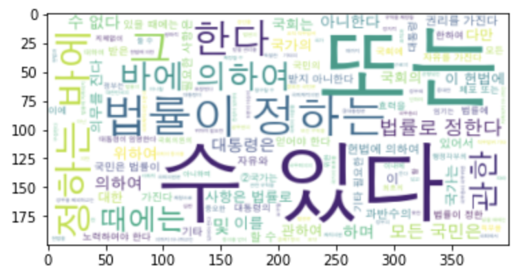
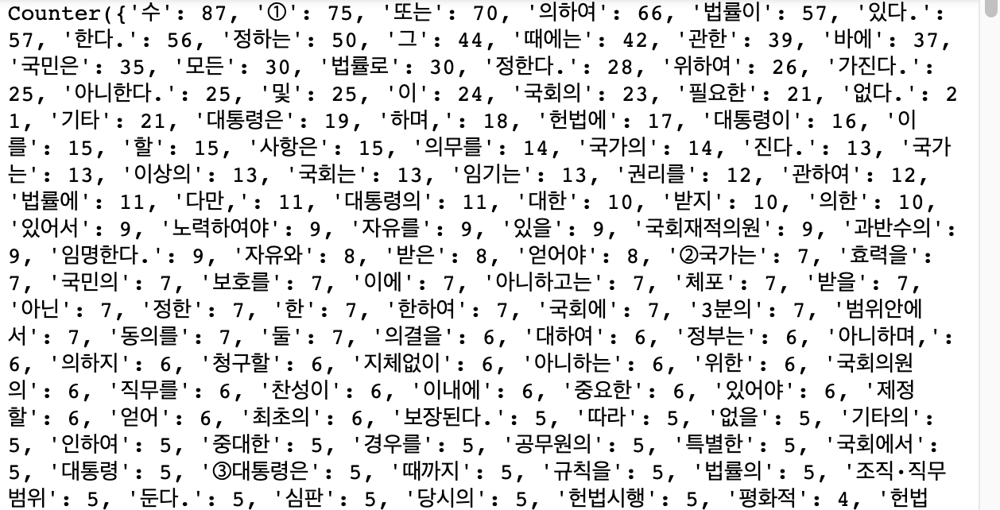
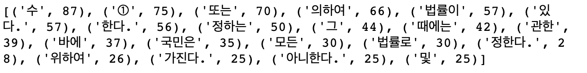
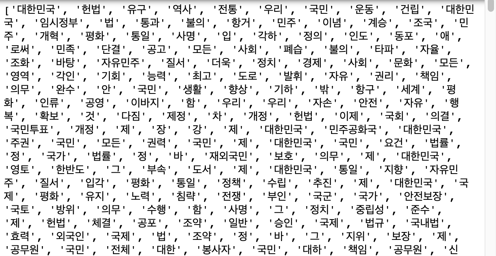
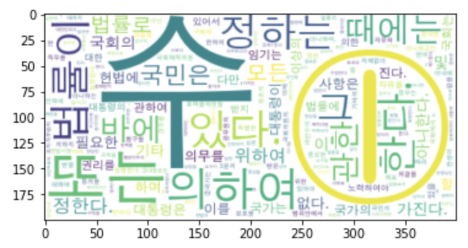
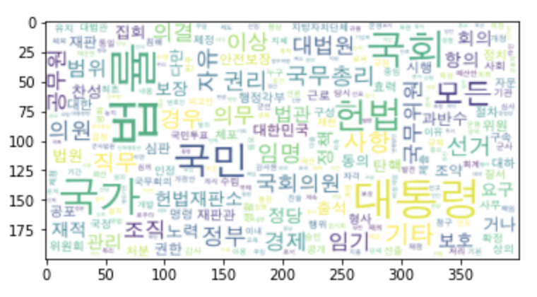
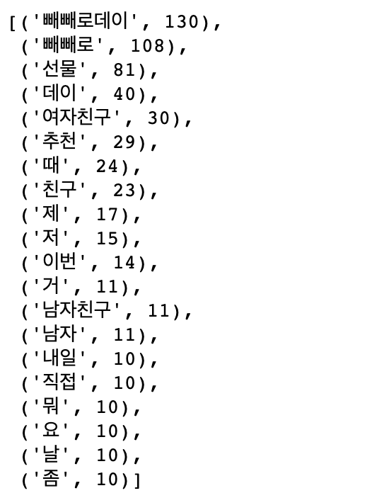

Intelligent Information Systems - Drawing Word Cloud
Word Cloud
- Word Cloud
- Size depends on frequency
- Shows frequently used word visually
! pip install wordcloud
- South Korean constitution law
from konlpy.corpus import kolaw
fids = kolaw.fileids()
fobj = kolaw.open(fids[0])
print(fobj.read(140))
fobj = kolaw.open(fids[0])
ko_doc = fobj.read()
Word Cloud
- Importing word cloud
from wordcloud import WordCloud
- Create word cloud object
- font_path
- max_words
- background_color
- mask
wc = WordCloud(background_color='white', max_words=2000)
wc = wc.generate(ko_doc)
Drawing Word Cloud
from wordcloud import WordCloud
import matplotlib.pyplot as plt
wc = WordCloud(background_color='white', max_words=2000, font_path='AppleGothic')
wc = wc.generate(ko_doc)
plt.imshow(wc, interpolation="bilinear")
plt.show()

generate_from_frequencies() and Counter()
- generate() or generate_from_text()
- generate_from_frequencies()
from collections import Counter
wc = WordCloud(background_color='white', max_words=2000, font_path='AppleGothic')
count = Counter(ko_doc.split())
wc = wc.generate_from_frequencies(count)
print(count)

most_common
print(count.most_common(20))

Extracting Nouns
from konlpy.tag import Okt
okt = Okt()
ko_doc_noun = okt.nouns(ko_doc)
print(ko_doc_noun)

Drawing Word Cloud: Nouns
from collections import Counter
import matplotlib.pyplot as plt
count_noun = Counter(ko_doc_noun)
wc_noun = WordCloud(background_color='white', max_words=2000, font_path='AppleGothic')
wc_noun = wc_noun.generate_from_frequencies(count)
plt.imshow(wc_noun, interpolation='bilinear')
plt.show()

Remove stopword
- What is stopword?
- Word that does not have any meaning
- E.g. I, me, my, …
Remove single letter word
stopword_list = []
for noun_word in count_noun:
if len(noun_word) == 1:
stopword_list.append(noun_word)
print(stopword_list[:5])
for stopword in stopword_list:
count_noun.pop(stopword)
wc_noun = wc_noun.generate_from_frequencies(count_noun)
import matplotlib.pyplot as plt
plt.imshow(wc_noun, interpolation='bilinear')
plt.show()

Drawing Word Cloud: Using Mask
import numpy as np
from PIL import Image
img_mask = np.array(Image.open('law.jpg'))
wc_img = WordCloud(background_color='white', max_words=2000, font_path='AppleGothic', mask=img_mask)
wc_img = wc_img.generate_from_frequencies(count_noun)
import matplotlib.pyplot as plt
plt.imshow(wc_img, interpolation='bilinear')
plt.axis('off')
plt.show()
Text Mining Process
- Data collection
- Data pre-processing
- Data analysis and visualization
Get Data from Naver and Drawing it
Data Collection
import pandas as pd
import numpy as np
from bs4 import BeautifulSoup
from urllib.request import urlopen
from tqdm.notebook import tqdm
import urllib
import time
tmp_list = []
for i in tqdm(range(1, 11)):
url = "https://kin.naver.com/search/list.naver?query=%EB%B9%BC%EB%B9%BC%EB%A1%9C%EB%8D%B0%EC%9D%B4&page=" + str(i)
html = urlopen(url)
soup = BeautifulSoup(html, "html.parser")
docs = soup.find("ul", {"class": "basic1"}).find_all("li")
for doc in docs:
ans = doc.find_all("dd")[1]
tmp_list.append(ans.text.strip())
time.sleep(0.5)
print(len(tmp_list))
Data pre-processing
from konlpy.tag import Okt
okt = Okt()
ko_doc = '\n'.join(tmp_list)
print(ko_doc[:1000])
import time
start = time.time()
ko_doc_noun = okt.nouns(ko_doc)
print(time.time()-start)
from collections import Counter
count_noun = Counter(ko_doc_noun)
count_noun.most_common(20)

stopword_list = ['빼빼로데이', '빼빼로', '데이']
for word in count_noun:
if len(word) == 1:
stopword_list.append(word)
print(stopword_list[-5:])
for stopword in stopword_list:
if stopword in count_noun:
count_noun.pop(stopword)
Data visualization
import numpy as np
from PIL import Image
img_mask = np.array(Image.open('present.jpg'))
wc_img = WordCloud(background_color='white', max_words=2000, font_path='AppleGothic', mask=img_mask)
wc_img = wc_img.generate_from_frequencies(count_noun)
import matplotlib.pyplot as plt
plt.imshow(wc_img, interpolation='bilinear')
plt.axis('off')
plt.show()
Reference
- Intelligent Information Systems Lecture by Youhyun Shin in Incheon National University